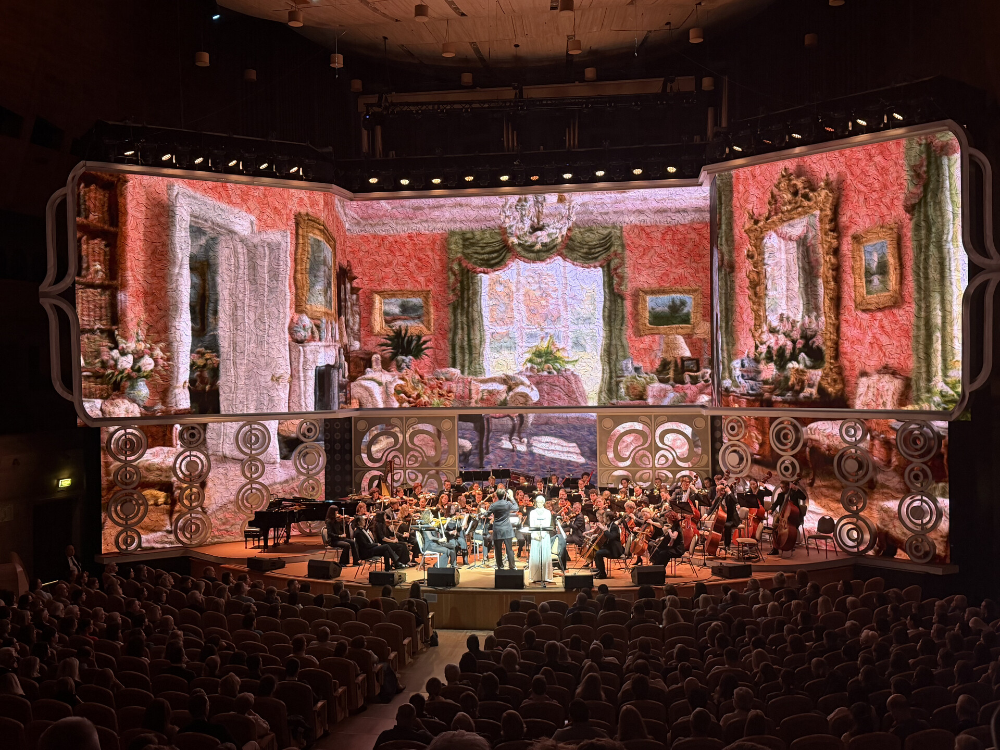
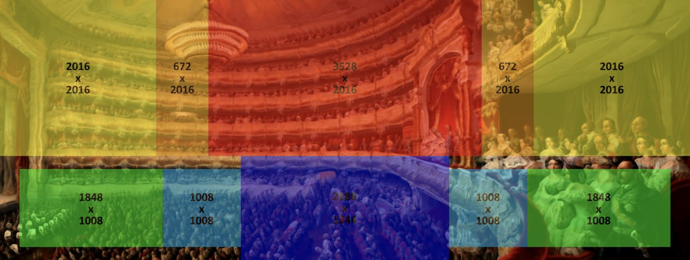
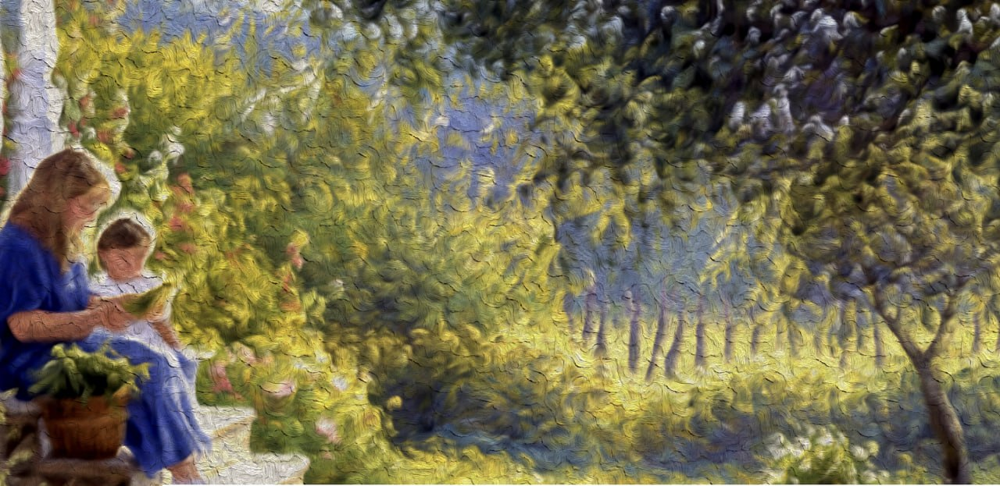
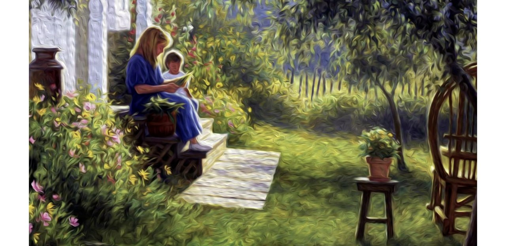
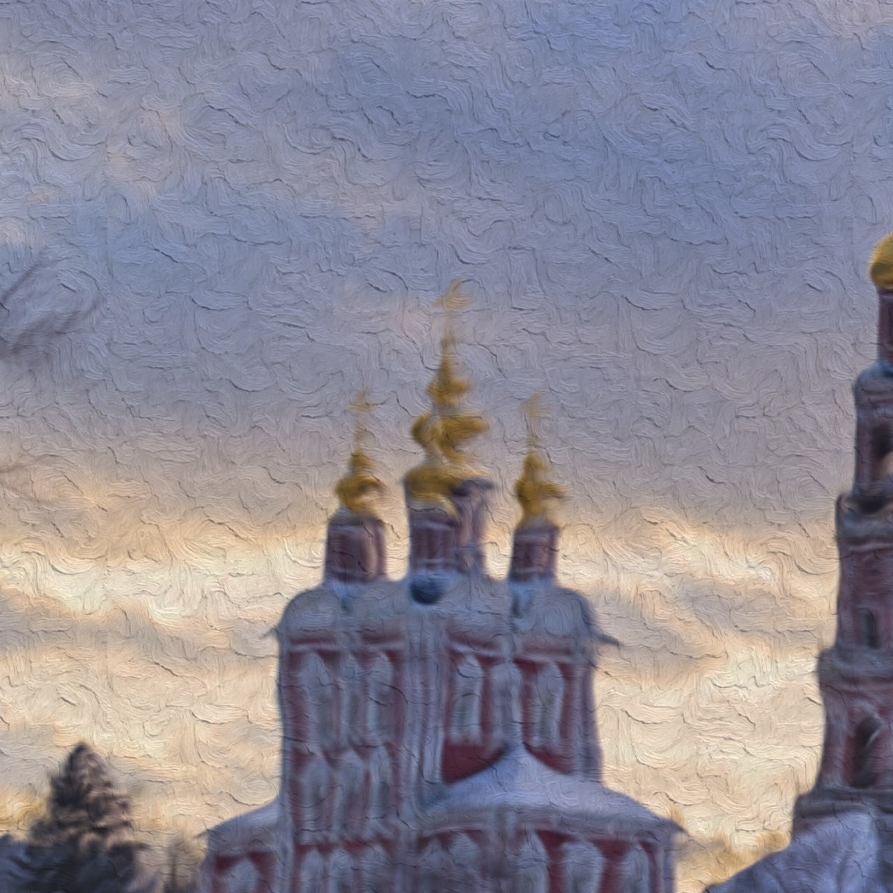
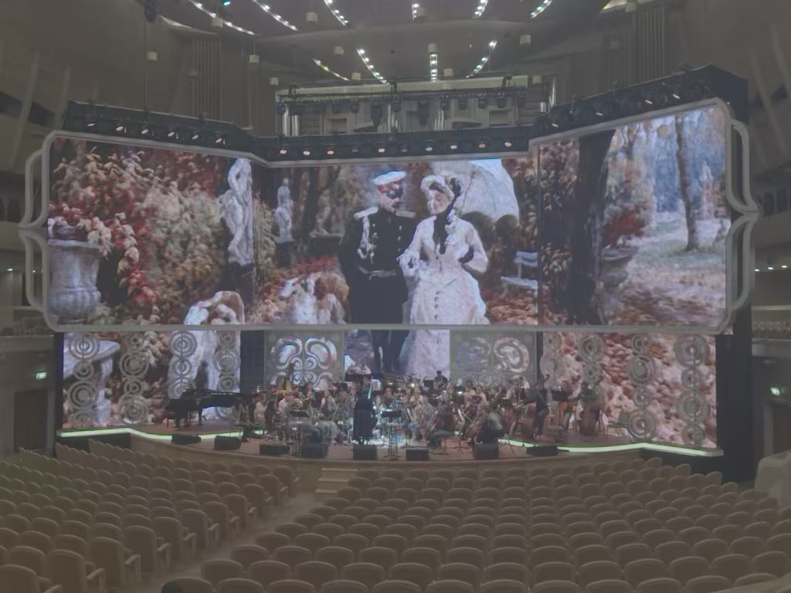
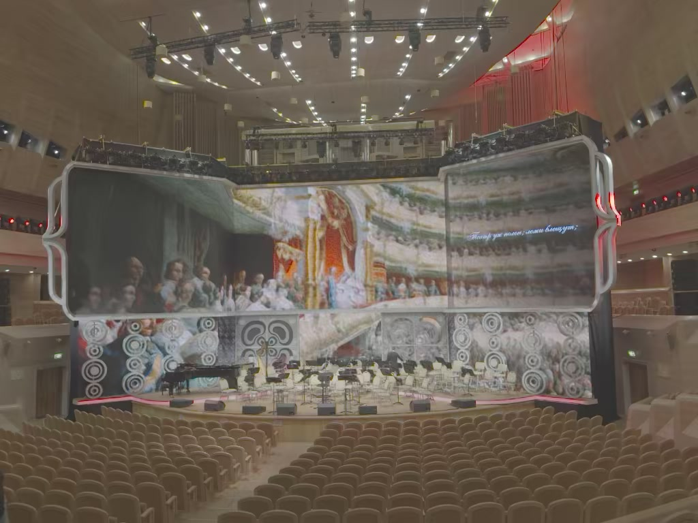
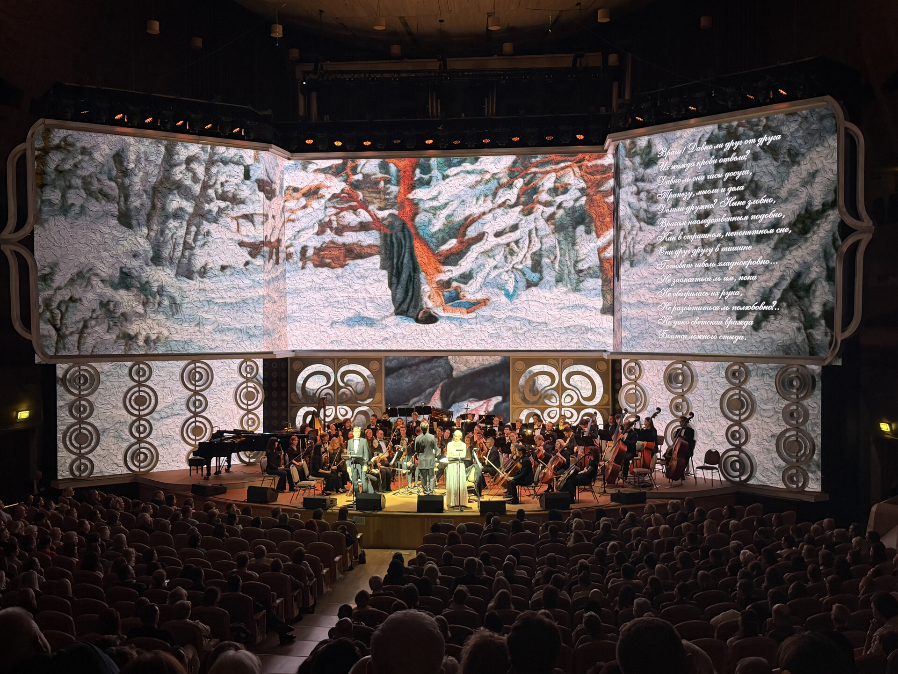

Онегин
22 сентября 2026
художественное слово — Евгений Миронов, Марина Александрова
Адаптация видеоконтента для большого экрана

Задача
Исходный Full HD-контент был адаптирован под многоэкранную сценографию ММДМ. Изображения масштабировались, композиционно расширялись и дорабатывались с сохранением исходной живописной фактуры. Финальный контент был подготовлен под 10 экранных поверхностей для воспроизведения через медиасервер disguise (d3).

Расширение композиции
Формат исходного изображения перестраивался под пропорции сценического пространства: недостающие области композиции продолжались так, чтобы изображение воспринималось единым.


Сохранение фактуры
При увеличении изображения важно было не потерять характер исходной живописи. Фактура дорабатывалась на уровне, который выдерживает масштаб большого экрана.

На сцене
Итоговая композиция собирается из десяти отдельных поверхностей и воспринимается зрителем как единое визуальное пространство.


